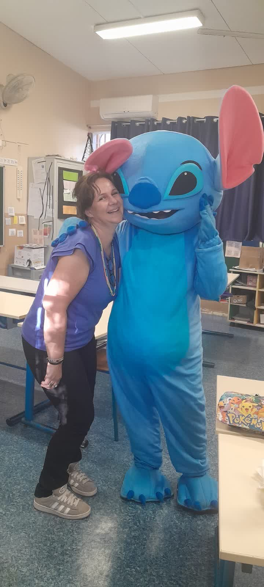

Fête communale, animation de centre-ville, journée des familles, vacances scolaires : pour une mairie de La Réunion, réussir le volet enfants d'un événement public, c'est réussir l'événement tout court — car là où les marmailles s'amusent, les familles viennent, restent… et font vivre les commerçants. Pull Up Événements fournit aux communes un dispositif enfants complet et encadré, clé en main de A à Z.
Le dispositif enfants d'une fête communale réussie
- Les structures gonflables — châteaux et toboggans géants : l'aimant à familles n°1, visible de loin, avec un animateur qui gère l'accès et la sécurité ;
- Les stands d'ateliers créatifs gratuits — coloriage, masques, décorations : les enfants créent et repartent avec leur œuvre ;
- Le maquillage enfants — la file d'attente la plus joyeuse de la fête ;
- Les mascottes géantes — photos, câlins et déambulation dans les allées et les rues commerçantes ;
- Les jeux en bois géants — l'espace intergénérationnel où grands-parents et marmailles jouent ensemble ;
- L'animateur micro — il rythme la journée, lance les mini-discos et annonce les temps forts du podium.

Pourquoi les enfants sont la clé du dynamisme du centre-ville
Le calcul est simple : un enfant ne vient jamais seul. Chaque marmaille attirée par un toboggan gonflable ou un atelier amène en moyenne un ou deux adultes — qui flânent, consomment et découvrent les commerces pendant que les enfants jouent sous surveillance. C'est la mécanique que nous appliquons toute l'année dans les galeries commerciales dont nous animons les dispositifs (Casabona à Saint-Pierre, Cap Sacré-Cœur au Port, Duparc à Sainte-Marie) : l'animation enfants crée le trafic, le trafic fait les ventes. En centre-ville, la même recette profite directement aux commerçants de la commune.
Encadrement et sécurité : notre exigence
Un événement public n'est pas un anniversaire à la maison : flux importants, enfants non inscrits, parents qui circulent. Nos animateurs sont des professionnels habitués au grand public — gestion des files, capacité des structures, hydratation, ombre, sonorisation des consignes. La mairie fixe les objectifs et le périmètre ; nous gérons le matériel, le personnel, l'installation, la coordination et le rangement, sur une journée ou sur plusieurs jours de fête.
Un événement municipal complet ? On gère tout
Le pôle enfants s'intègre dans un dispositif global : podium avec artistes, brigade de Noël en décembre (notre guide dédié aux mairies), stands animés, sonorisation et animateurs micro. Découvrez aussi notre kids club en galerie et les animations par âge. Un projet pour votre commune ? 06 93 81 78 82 — devis clair sous 48 h.